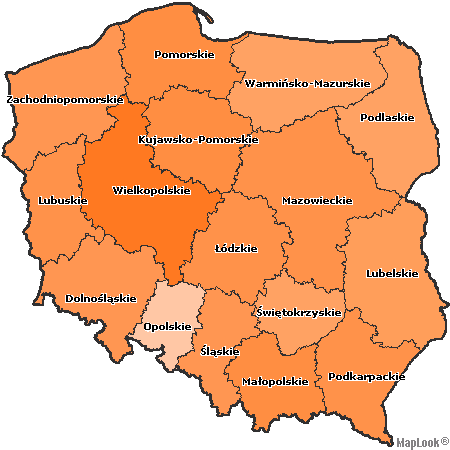

Polska
Procentowa liczba głosów dla poszczególnych kandydatów
 |
Wyniki poszczególnych kandydatów |
| |
|
| Kandydat |
Liczba g�os�w oddanych na kandydata |
Liczba wszystkich wa�nych g�os�w |
Procentowa liczba g�os�w oddanych na kandydata |
|
|
|
| GRABOWSKI
Dariusz |
89 002 |
17 598 919 |
0,51 |
| IKONOWICZ
Piotr |
38 672 |
17 598 919 |
0,22 |
| KALINOWSKI
Jaros�aw |
1 047 949 |
17 598 919 |
5,95 |
| KORWIN-MIKKE
Janusz |
252 499 |
17 598 919 |
1,43 |
| KRZAKLEWSKI
Marian |
2 739 621 |
17 598 919 |
15,57 |
| KWA�NIEWSKI
Aleksander |
9 485 224 |
17 598 919 |
53,90 |
| LEPPER
Andrzej |
537 570 |
17 598 919 |
3,05 |
| �OPUSZA�SKI
Jan |
139 682 |
17 598 919 |
0,79 |
| OLECHOWSKI
Andrzej |
3 044 141 |
17 598 919 |
17,30 |
| PAW�OWSKI
Bogdan |
17 164 |
17 598 919 |
0,10 |
| WA��SA
Lech |
178 590 |
17 598 919 |
1,01 |
| WILECKI
Tadeusz |
28 805 |
17 598 919 |
0,16 |
|
|
|
Frekwencja |
| |

|
Statystyka og��em |
| |
|
| Liczba uprawnionych do g�osowania |
29 122 304 |
| Liczba wydanych kart do g�osowania |
17 798 791 |
| Liczba kart wyj�tych z urny |
17 789 231 |
| Liczba wa�nych g�os�w |
17 598 919 |
| Liczba niewa�nych g�os�w |
190 312 |
| Frekwencja (%) |
61,12 |
|
|